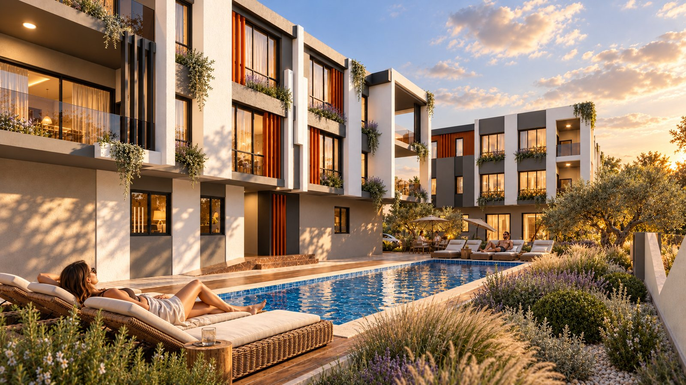

Demirel İnşaat Mimarlık Mühendislik
Valora Suits
Altınkale, Döşemealtı, Antalya

Geliştirici; iki blokta 14 konut, yüzme havuzu, peyzaj alanları, akıllı ev sistemleri ve yerden ısıtma özelliklerini belirtiyor. Proje 2026 yılı altında listeleniyor; bu bilgi kesin teslim tarihi değildir.
01 / Görsellerle proje
Mekânları inceleyin.
Geliştiricinin proje görsellerine dayanan, APERTIS tarafından yapay zekâ ile iyileştirilmiş çalışmalar.

02 / Proje bilgileri
Altınkale, Döşemealtı, Antalya
Kaynak kontrolünde proje devam ediyor ve %10 tamamlanmış olarak listeleniyor. Güncel ilerleme ve müsaitlik geliştiriciden teyit edilmelidir. Kaynak kontrol tarihi: 2026-10-12. Müsaitlik ve tarihler geliştirici tarafından teyit edilmelidir.
Satış iletişim bilgileriniz de aynı yerde
Bu örnek başvuru kabul etmemektedir. Sipariş edilen bir sunum, onayladığınız iletişim bilgilerini ve başvuru bağlantılarını içerir.